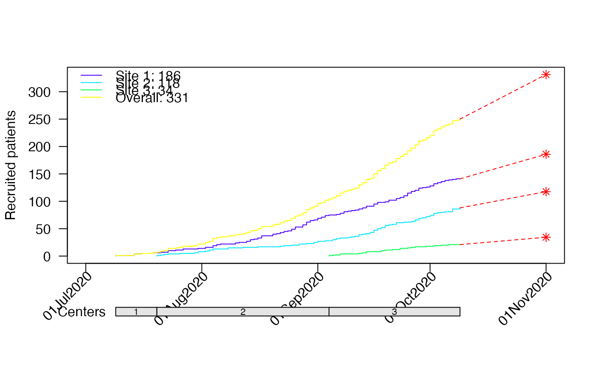
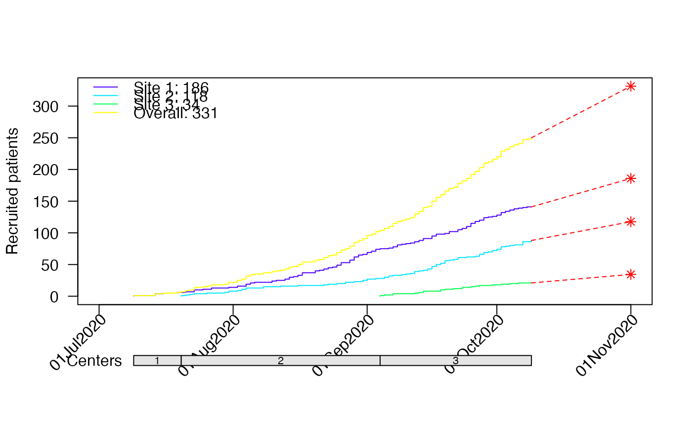
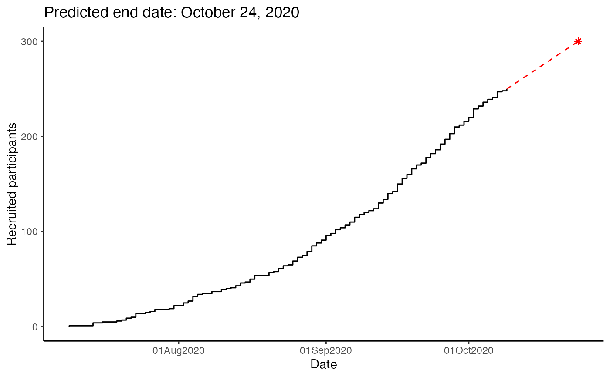
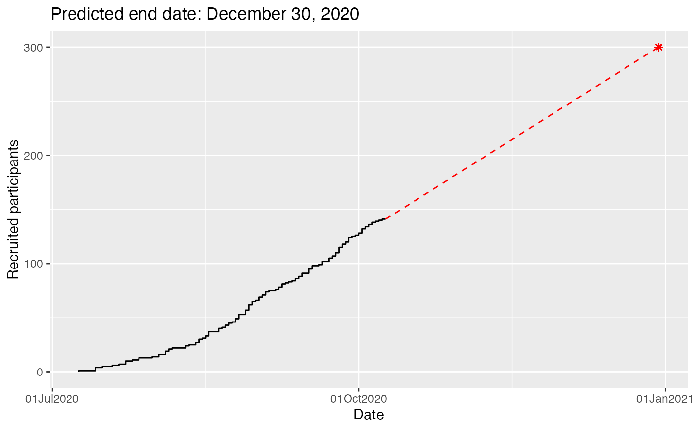
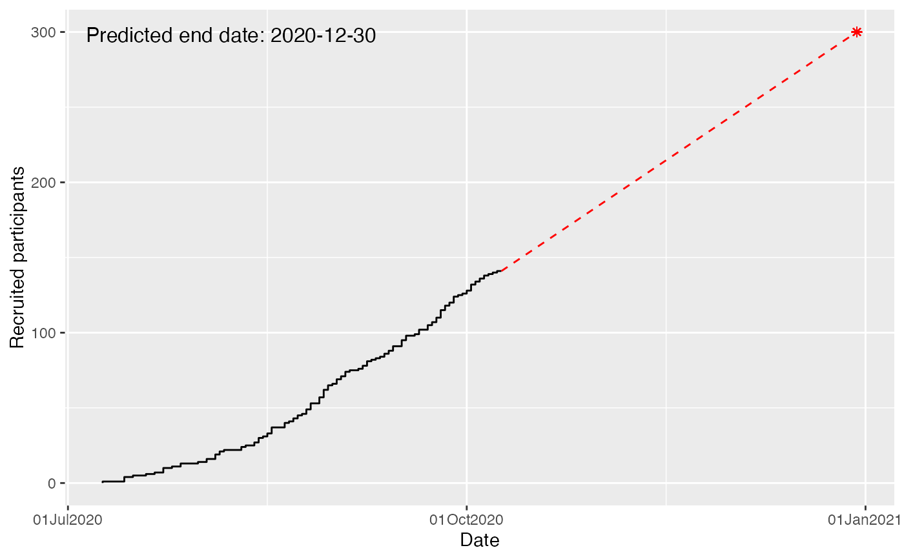
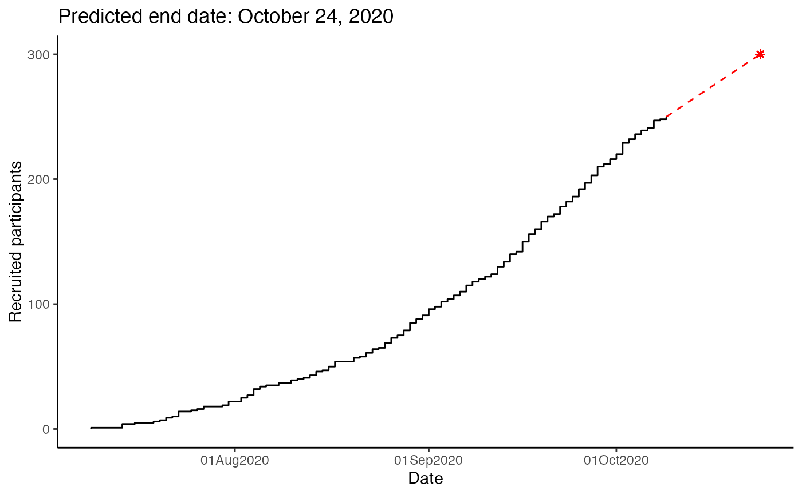
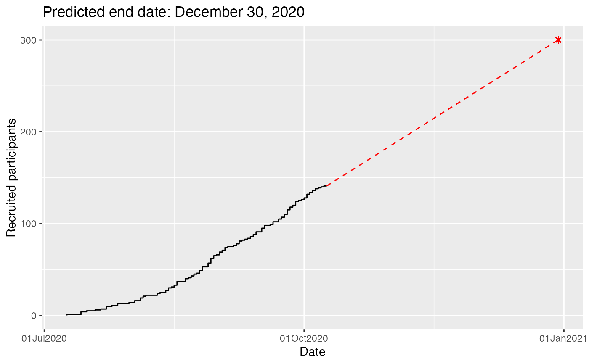
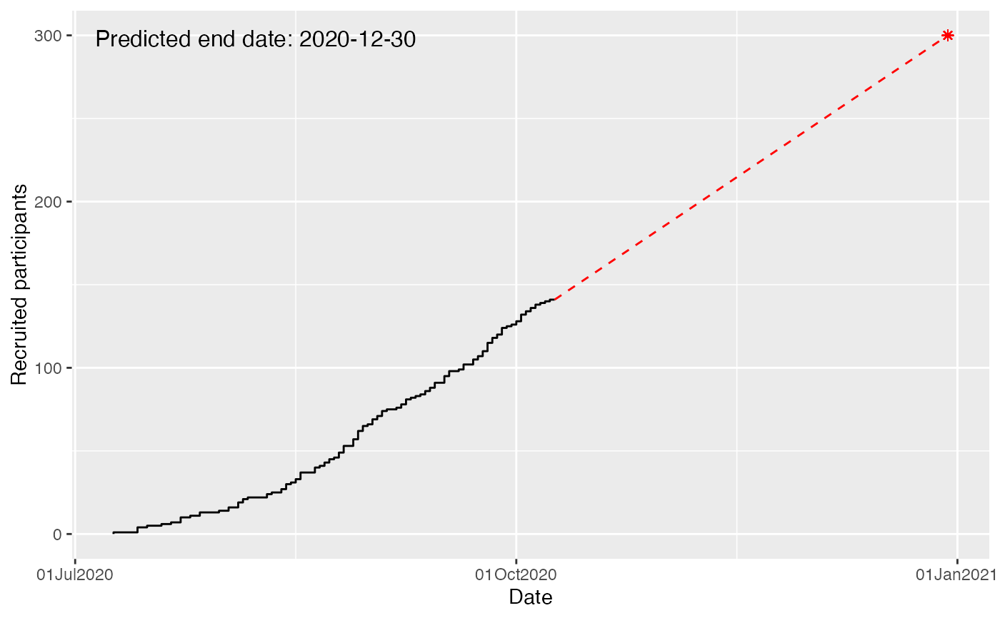

Generates an accrual prediction plot using an accrual data frame produced by accrual_create_df
and a target sample size. Prediction is based on a weighted linear regression.
If the accrual data frame is a list (i.e. using the by option in accrual_create_df),
or if center start dates are given, the number of enrolled and targeted sites is included.
Usage
accrual_plot_predict(
accrual_df,
target,
overall = TRUE,
name_overall = attr(accrual_df, "name_overall"),
fill_up = TRUE,
wfun = function(x) seq(1/nrow(x), 1, by = 1/nrow(x)),
col.obs = NULL,
lty.obs = 1,
col.pred = "red",
lty.pred = 2,
pch.pred = 8,
pos_prediction = c("out", "in", "none"),
label_prediction = NULL,
cex_prediction = 1,
format_prediction = "%B %d, %Y",
show_center = TRUE,
design = 1,
center_label = "Centers",
center_legend = c("number", "strip"),
targetc = NA,
center_colors = NULL,
center_legend_text_size = 0.7,
ylim = NA,
xlim = NA,
ylab = "Recruited patients",
xlabformat = "%d%b%Y",
xlabn = 5,
xlabminn = xlabn%/%2,
xlabpos = NA,
xlabsrt = 45,
xlabadj = c(1, 1),
xlabcex = 1,
mar = NA,
legend.list = NULL,
...,
center_start_dates = NULL
)
gg_accrual_plot_predict(
accrual_df,
target,
overall = TRUE,
name_overall = attr(accrual_df, "name_overall"),
col.pred = "red",
lty.pred = 2,
pch.pred = 8,
fill_up = TRUE,
wfun = function(x) seq(1/nrow(x), 1, by = 1/nrow(x)),
pos_prediction = c("out", "in", "none"),
label_prediction = NULL,
format_prediction = "%B %d, %Y",
xlabformat = "%d%b%Y"
)Arguments
- accrual_df
object of class 'accrual_df' or 'accrual_list' produced by
accrual_create_df.- target
target sample size or date to predict end date or expected sample size, respectively. A single number or date, or a named vector with the same length as accrual_df. For the latter, center-specific predictions are shown.
- overall
logical, indicates that accrual_df contains a summary with all sites (only if by is not NA).
- name_overall
name of the summary with all sites (if by is not NA and overall==TRUE).
- fill_up
whether to fill up days where no recruitment was observed, otherwise these points do not contribute to the regression.
- wfun
function to calculate the weights with accrual data frame as argument, default is wfun<-function(x) seq(1 / nrow(x), 1, by = 1/nrow(x)).
- col.obs
line color of cumulative recruitment, can be a vector with the same length as accrual_df.
- lty.obs
line type of cumulative recruitment, can be a vector with the same length as accrual_df.
- col.pred
line color of prediction, can be a vector with the same length as accrual_df.
- lty.pred
line color of prediction, can be a vector with the same length as accrual_df.
- pch.pred
point symbol for end of prediction, can be a vector with the same length as accrual_df.
- pos_prediction
position of text with predicted end date or sample size, either
"out","in"or"none".- label_prediction
label for predicted end date or sample size.
- cex_prediction
text size for predicted end date or sample size.
- format_prediction
date format for predicted end date (only if target is a sample size)
- show_center
logical, whether the center info should be shown (if accrual_df is a list or if center_start_dates are given).
- design
design options for the center info 1 (default): below plot, 2: within plot, top, 3: within plot, bottom.
- center_label
label for the center info.
- center_legend
either "number" to plot numbers in the center strip or "strip" to add a legend strip, requires specification of center_colors.
- targetc
target number of centers, to scale the legend if it is "strip".
- center_colors
colors to be used for the strip with the centers, a vector of length targetc.
- center_legend_text_size
size of the text of the center or legend strip, only has a function
- ylim
limits for y-axis.
- xlim
limits for x-axis.
- ylab
y-axis label.
- xlabformat
format of date on x-axis.
- xlabn
integer giving the desired number of intervals for the xlabel, default=5.
- xlabminn
integer giving the minimal number of intervals.
- xlabpos
position of the x-label.
- xlabsrt
rotation of x-axis labels in degrees.
- xlabadj
adjustment of x-label, numeric vector with length 1 or 2 for different adjustment in x- and y-direction.
- xlabcex
size of x-axis label.
- mar
vector of length 4 (bottom, left, top, right margins), overwrite default margins.
- legend.list
named list with options passed to legend(), only if accrual data frame is a list.
- ...
further options passed to plot() and axis().
- center_start_dates
alternative way to add center info, vector with dates on which centers are enrolled.
Details
When the accrual_df includes multiple sites, the dataframe
passed to ggplot includes a site variable
which can be used for facetting
Examples
data(accrualdemo)
accrual_df<-accrual_create_df(accrualdemo$date)
##Predict end date
accrual_plot_predict(accrual_df=accrual_df,target=300)
 ##Predict sample size
accrual_plot_predict(accrual_df=accrual_df,as.Date("2020-11-01"))
#Include site
accrual_df<-accrual_create_df(accrualdemo$date,by=accrualdemo$site)
accrual_plot_predict(accrual_df=accrual_df,target=300,center_label="Site")
##Predict sample size
accrual_plot_predict(accrual_df=accrual_df,as.Date("2020-11-01"))
#Include site
accrual_df<-accrual_create_df(accrualdemo$date,by=accrualdemo$site)
accrual_plot_predict(accrual_df=accrual_df,target=300,center_label="Site")
 ## with strip and target
accrual_plot_predict(accrual_df=accrual_df,target=300,center_label="Site",
targetc=5,center_colors=heat.colors(5),center_legend="strip")
## with strip and target
accrual_plot_predict(accrual_df=accrual_df,target=300,center_label="Site",
targetc=5,center_colors=heat.colors(5),center_legend="strip")
 #Design for site
accrual_plot_predict(accrual_df=accrual_df,target=300,design=2)
#Design for site
accrual_plot_predict(accrual_df=accrual_df,target=300,design=2)
 #Format prediction end date
accrual_plot_predict(accrual_df=accrual_df,target=300,
pos_prediction="in",label_prediction="End of accrual: ",cex_prediction=1.2,
format_prediction="%Y-%m-%d",ylim=c(0,150))
#Format prediction end date
accrual_plot_predict(accrual_df=accrual_df,target=300,
pos_prediction="in",label_prediction="End of accrual: ",cex_prediction=1.2,
format_prediction="%Y-%m-%d",ylim=c(0,150))
 #Format plot
accrual_plot_predict(accrual_df=accrual_df,target=300,
ylab="No of recruited patients",ylim=c(0,150),
xlabcex=1.2,xlabsrt=30,xlabn=5,xlabmin=5,
mgp=c(3,0.5,0),cex.lab=1.2,cex.axis=1.2)
#Format plot
accrual_plot_predict(accrual_df=accrual_df,target=300,
ylab="No of recruited patients",ylim=c(0,150),
xlabcex=1.2,xlabsrt=30,xlabn=5,xlabmin=5,
mgp=c(3,0.5,0),cex.lab=1.2,cex.axis=1.2)
 #predictions for all sites
accrual_plot_predict(accrual_df=accrual_df,
target=c("Site 1"=160,"Site 2"=100,"Site 3"=40,"Overall"=300))
#predictions for all sites
accrual_plot_predict(accrual_df=accrual_df,
target=c("Site 1"=160,"Site 2"=100,"Site 3"=40,"Overall"=300))
 ## different colors
accrual_plot_predict(accrual_df=accrual_df,
target=c("Site 1"=160,"Site 2"=100,"Site 3"=40,"Overall"=300),
col.obs=topo.colors(length(accrual_df)))
## different colors
accrual_plot_predict(accrual_df=accrual_df,
target=c("Site 1"=160,"Site 2"=100,"Site 3"=40,"Overall"=300),
col.obs=topo.colors(length(accrual_df)))
 ##not showing center info
accrual_plot_predict(accrual_df=accrual_df,
target=c("Site 1"=160,"Site 2"=100,"Site 3"=40,"Overall"=300),
show_center=FALSE)
#predictions of sample size for all sites
target<-rep(as.Date("2020-11-01"),4)
names(target)<-c("Site 1","Site 2","Site 3","Overall")
accrual_plot_predict(accrual_df=accrual_df,target=target,col.obs=topo.colors(length(accrual_df)))

### ggplot2 approach
data(accrualdemo)
accrual_df<-accrual_create_df(accrualdemo$date)
gg_accrual_plot_predict(accrual_df = accrual_df, target = 300)
#> Warning: All aesthetics have length 1, but the data has 79 rows.
#> ℹ Please consider using `annotate()` or provide this layer with data containing
#> a single row.
##not showing center info
accrual_plot_predict(accrual_df=accrual_df,
target=c("Site 1"=160,"Site 2"=100,"Site 3"=40,"Overall"=300),
show_center=FALSE)
#predictions of sample size for all sites
target<-rep(as.Date("2020-11-01"),4)
names(target)<-c("Site 1","Site 2","Site 3","Overall")
accrual_plot_predict(accrual_df=accrual_df,target=target,col.obs=topo.colors(length(accrual_df)))

### ggplot2 approach
data(accrualdemo)
accrual_df<-accrual_create_df(accrualdemo$date)
gg_accrual_plot_predict(accrual_df = accrual_df, target = 300)
#> Warning: All aesthetics have length 1, but the data has 79 rows.
#> ℹ Please consider using `annotate()` or provide this layer with data containing
#> a single row.
 gg_accrual_plot_predict(accrual_df = accrual_df, target = 300) +
ggplot2::theme_classic()
#> Warning: All aesthetics have length 1, but the data has 79 rows.
#> ℹ Please consider using `annotate()` or provide this layer with data containing
#> a single row.

#Include site
accrual_df<-accrual_create_df(accrualdemo$date, by=accrualdemo$site)
gg_accrual_plot_predict(accrual_df=accrual_df, target=300)
#> Warning: All aesthetics have length 1, but the data has 67 rows.
#> ℹ Please consider using `annotate()` or provide this layer with data containing
#> a single row.

#Format prediction end date
gg_accrual_plot_predict(accrual_df = accrual_df,
target=300,
pos_prediction="in",
format_prediction="%Y-%m-%d")
#> Warning: All aesthetics have length 1, but the data has 67 rows.
#> ℹ Please consider using `annotate()` or provide this layer with data containing
#> a single row.

#predictions for all sites
gg_accrual_plot_predict(accrual_df = accrual_df,
target=c("Site 1"=160,"Site 2"=100,"Site 3"=40,"Overall"=300))
gg_accrual_plot_predict(accrual_df = accrual_df,
target=c("Site 1"=160,"Site 2"=100,"Site 3"=40,"Overall"=300)) +
ggplot2::theme(legend.position = c(0.15,.9)) +
ggplot2::labs(col = "Site")
#> Warning: A numeric `legend.position` argument in `theme()` was deprecated in ggplot2
#> 3.5.0.
#> ℹ Please use the `legend.position.inside` argument of `theme()` instead.
gg_accrual_plot_predict(accrual_df = accrual_df, target = 300) +
ggplot2::theme_classic()
#> Warning: All aesthetics have length 1, but the data has 79 rows.
#> ℹ Please consider using `annotate()` or provide this layer with data containing
#> a single row.

#Include site
accrual_df<-accrual_create_df(accrualdemo$date, by=accrualdemo$site)
gg_accrual_plot_predict(accrual_df=accrual_df, target=300)
#> Warning: All aesthetics have length 1, but the data has 67 rows.
#> ℹ Please consider using `annotate()` or provide this layer with data containing
#> a single row.

#Format prediction end date
gg_accrual_plot_predict(accrual_df = accrual_df,
target=300,
pos_prediction="in",
format_prediction="%Y-%m-%d")
#> Warning: All aesthetics have length 1, but the data has 67 rows.
#> ℹ Please consider using `annotate()` or provide this layer with data containing
#> a single row.

#predictions for all sites
gg_accrual_plot_predict(accrual_df = accrual_df,
target=c("Site 1"=160,"Site 2"=100,"Site 3"=40,"Overall"=300))
gg_accrual_plot_predict(accrual_df = accrual_df,
target=c("Site 1"=160,"Site 2"=100,"Site 3"=40,"Overall"=300)) +
ggplot2::theme(legend.position = c(0.15,.9)) +
ggplot2::labs(col = "Site")
#> Warning: A numeric `legend.position` argument in `theme()` was deprecated in ggplot2
#> 3.5.0.
#> ℹ Please use the `legend.position.inside` argument of `theme()` instead.